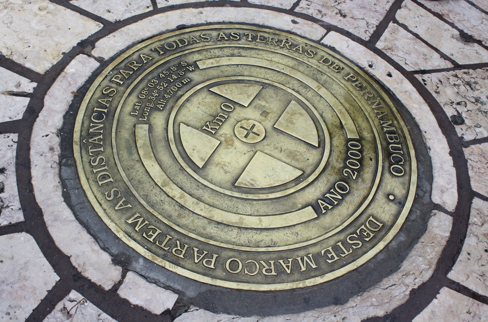
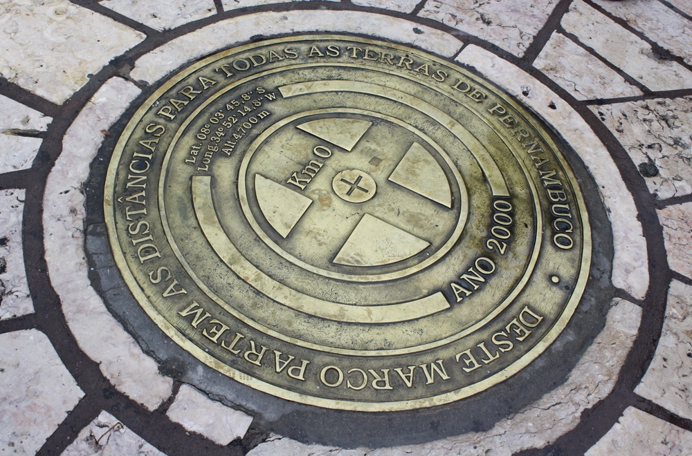

O que é
Conhecida pelo seu nome popular – Praça do Marco Zero, na verdade, é um apelido – o local se chama Praça Barão do Rio Branco e está localizada no Bairro do Recife, o Centro Histórico da cidade, que também atende por outra alcunha, mais popular: Recife Antigo. Além de dar o nome oficial à praça, o Barão do Rio Branco também está representado no local por uma estátua em bronze de 2,80m de altura, feita pelo escultor francês Félix Charpentier. Local de fundação da cidade do Recife e também como ponto inicial de contagem das distâncias calculadas a partir da cidade. O lugar é um dos pontos mais importantes na capital Pernambucana, pois é também uma região de forte movimento durante o Carnaval.

Os 2 marcos
O nome de Praça do Marco Zero se popularizou por conta da instalação, em 31 de janeiro de 1938, do Marco Zero de Recife, doado à cidade pelo Automóvel Clube de Pernambuco. Essa versão antiga, foi substítuida em 2000, pela placa redonda posicionada na praça simbolizando o centro geográfico de onde partem as medições para todas as estradas de Pernambuco.
 

Outros pontos turísticos
Para conhecer sobre outros 2 pontos turísticos do Recife Antigo Clique Aqui!